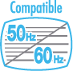

|
UTILISATION DE LA TELECOMMANDE Wii |
- Utilisez la dragonne! Assurez-vous que tous les joueurs utilisent la dragonne (RVL-018 ou RVL-018A) et que les guides sont correctement ajustés. Lorsque plusieurs joueurs utilisent la même télécommande Wii, assurez-vous que chacun d’eux ajuste la dragonne correctement. Attacher la dragonne permet d’éviter de laisser tomber la télécommande Wii si vous la lâchez accidentellement pendant une partie.


- Tenez la télécommande Wii fermement et ne la lâchez pas! Même lorsque vous portez la dragonne, ne lâchez jamais la télécommande Wii lorsque vous jouez. Par exemple, dans le jeu de bowling de Wii Sports™, vous devez relâcher
 sur la télécommande Wii – ET PAS LA TELECOMMANDE Wii ELLE-MEME – pour lancer la boule. Si vos mains deviennent moites ou humides pour une raison quelconque, arrêtez de jouer et séchez-les avant de recommencer à jouer. Evitez tout mouvement excessivement ample, rapide ou vigoureux qui pourrait vous faire lâcher la télécommande Wii et casser la dragonne. Si cela se produit, vous risquez de blesser les personnes alentour et de casser la télécommande Wii ou d’autres objets.
sur la télécommande Wii – ET PAS LA TELECOMMANDE Wii ELLE-MEME – pour lancer la boule. Si vos mains deviennent moites ou humides pour une raison quelconque, arrêtez de jouer et séchez-les avant de recommencer à jouer. Evitez tout mouvement excessivement ample, rapide ou vigoureux qui pourrait vous faire lâcher la télécommande Wii et casser la dragonne. Si cela se produit, vous risquez de blesser les personnes alentour et de casser la télécommande Wii ou d’autres objets.
Informations supplémentaires sur l'utilisation de la dragonne:
Il se peut que vous ayez à effectuer des mouvements secs ou rapides avec la télécommande Wii ou le Nunchuk™ lorsque vous jouez à la console Wii. Veuillez utiliser la dragonne au cas où vous lâcheriez la télécommande Wii afin de réduire le risque d’endommager la télécommande Wii, les objets alentour ou de blesser des personnes. Pour obtenir de plus amples informations et garantir une utilisation sûre du produit, veuillez vous référer au mode d’emploi Wii – Installation de la console (section Utiliser la télécommande Wii).
|
PRECAUTIONS CONCERNANT L'AIRE DE JEU
|
Laissez suffisamment d’espace libre autour de vous! Vous aurez probablement à vous déplacer et à effectuer des mouvements assez amples pendant vos parties; assurez-vous donc de jouer suffisamment loin des meubles, des objets ou des personnes alentour pour éviter de les toucher accidentellement. Comme indiqué dans le mode d'emploi Wii, il vous est recommandé de vous tenir à un minimum d'un mètre de la télévision.
Ces informations sont également disponibles sur: www.nintendo.com/healthsafety.

Nombreux sont ceux qui ne connaissent pas la différence entre le 50 Hz et le 60 Hz, mais comme la plupart des téléviseurs modernes prennent en charge le 60 Hz, cela vaut la peine de vérifier si votre téléviseur est compatible. En quelques mots, les Hertz (Hz) expriment le nombre d’images par seconde affichées sur votre écran.
En 50 Hz, l’écran affiche 25 images par seconde, contre 30 en 60 Hz. La différence peut paraître minime, mais l’image gagne indéniablement en qualité quand on passe de 25 à 30 images par seconde. En 60 Hz, l’image est plus lisse, moins clignotante et le jeu fonctionne à une vitesse optimale, ce qui vous permet de bénéficier d’une expérience de jeu unique.
La console Wii est en mode 50 Hz (576i) par défaut. Pour activer le mode 60 Hz (480i), sélectionnez TYPE DE TELEVISEUR dans les paramètres Wii. Cependant, certains téléviseurs, principalement les plus anciens, ne peuvent pas afficher les jeux en mode 60 Hz (480i) et certains joueurs peuvent donc avoir des difficultés à utiliser ce mode d’affichage sur leur téléviseur. Pour savoir si votre téléviseur est compatible avec le mode 60 Hz (480i), consultez son mode d’emploi ou contactez le fabricant.
Si, une fois le mode 60 Hz (480i) activé, votre écran n’affiche aucune image ou si l’image est déformée, il est probable que votre téléviseur ne prenne pas en charge le mode 60 Hz (480i). Pour revenir au réglage par défaut, appuyez sur le bouton RESET sur la console Wii tout en maintenant bas enfoncé sur la manette + pour que la console Wii redémarre en mode 50 Hz (576i). Reportez-vous au mode d’emploi Wii – Chaînes et paramètres pour de plus amples informations sur ce réglage.
De plus, lorsque vous branchez le câble RVB Wii (RVL-013) (vendu séparément) sur un téléviseur qui dispose d’une entrée RVB et d’une compatibilité PAL60, ou que vous branchez le câble composante AV Wii (RVL-011) (vendu séparément) sur un téléviseur qui dispose d’une entrée vidéo composante, vous pouvez profiter d’une image bien plus nette.
EDTV/HDTV (480p) est un mode d’affichage à balayage progressif qui permet d’obtenir la meilleure qualité d’image possible. Avec ce mode, l’image est plus précise et moins clignotante, et le jeu fonctionne à une vitesse optimale, ce qui vous permet de bénéficier d’une expérience de jeu unique. Chez Nintendo®, nous voulons que les joueurs puissent profiter de leurs jeux dans les meilleures conditions possibles.
Dans certains cas, ce mode ne peut pas être affiché, cela dépend de la combinaison téléviseur-câble que vous utilisez. Pour savoir si votre téléviseur est compatible avec l’affichage Progressive Scan nécessaire pour le mode EDTV/HDTV (480p), consultez son mode d’emploi ou contactez le fabricant pour plus de détails. Assurez-vous que vous utilisez le câble composante AV Wii (RVL-011) (vendu séparément) et paramétrez votre téléviseur pour le Progressive Scan lorsque vous choisissez ce mode.
La console Wii est en mode 50 Hz (576i) par défaut. Pour activer le mode EDTV/HDTV (480p), veuillez sélectionner TYPE DE TELEVISEUR dans les paramètres Wii. Reportez-vous au mode d’emploi Wii – Chaînes et paramètres pour de plus amples informations sur ce réglage.